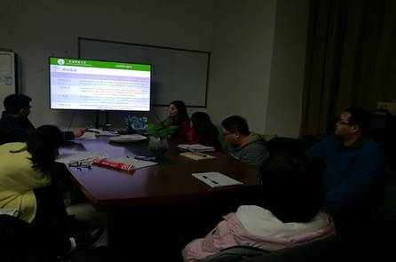
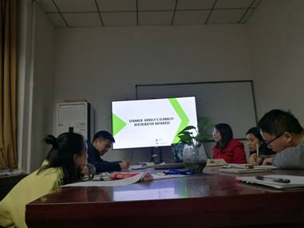

新学期的第一次例会
新的一学期已经开始，实验室召开了本学期的第一次学术分享例会。此次参加的成员有蔡文杰、刘欢、李光伟、罗国婷、冯姣、唐怡、张弛名、骆蓉、闫博文和蒙小龙等10位研究生同学，以及黄俊老师和王庆凤老师指导此次会议的顺利进行。
会议分为两部分进行，第一部分是同学们各自总结这一周的学习内容和心得体会，第二部分是唐怡同学分享了《A novel trajectory planning strategy for aircraft emergency landing using Gauss pseudospectral method》和骆蓉同学分享的一种Google的数据库技术——《SPANNER: GOOGLE’s GLOBALLY DISTRIBUTRD DATABASE》。
唐怡同学此次分享的是针对飞机紧急着陆利用高斯伪谱法提出的一种新颖的轨迹规划策略，所读文献中给出飞机遇到紧急情况时的最短时间急迫降轨迹。并利用高斯伪谱法将轨迹规划问题转化为非线性规划问题，再通过序列二次算法进行求解。

唐怡同学讲解 轨迹规划策略
骆蓉同学介绍到:Spanner 是谷歌公司研发的、可扩展的、多版本、全球分布式、同步复制数据库。它是第一个把数据分布在全球范围内的系统，并且支持外部一致性的分布式事务。

骆蓉同学讲解SPANNER
新的学期开始，同学们都以积极的态度来迎接新的学习，愿同学们在新的学期中获得更大的收获。